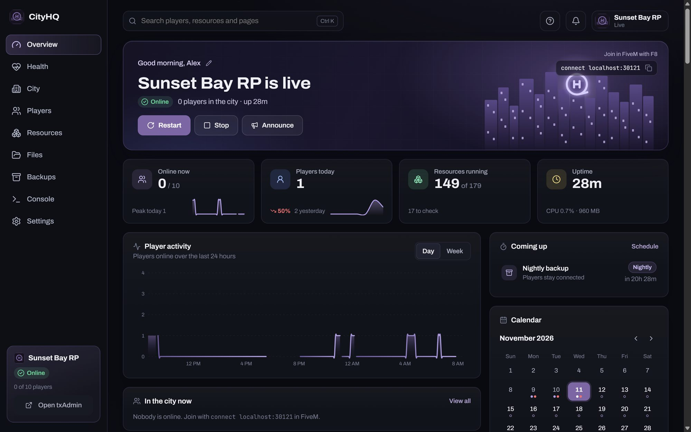
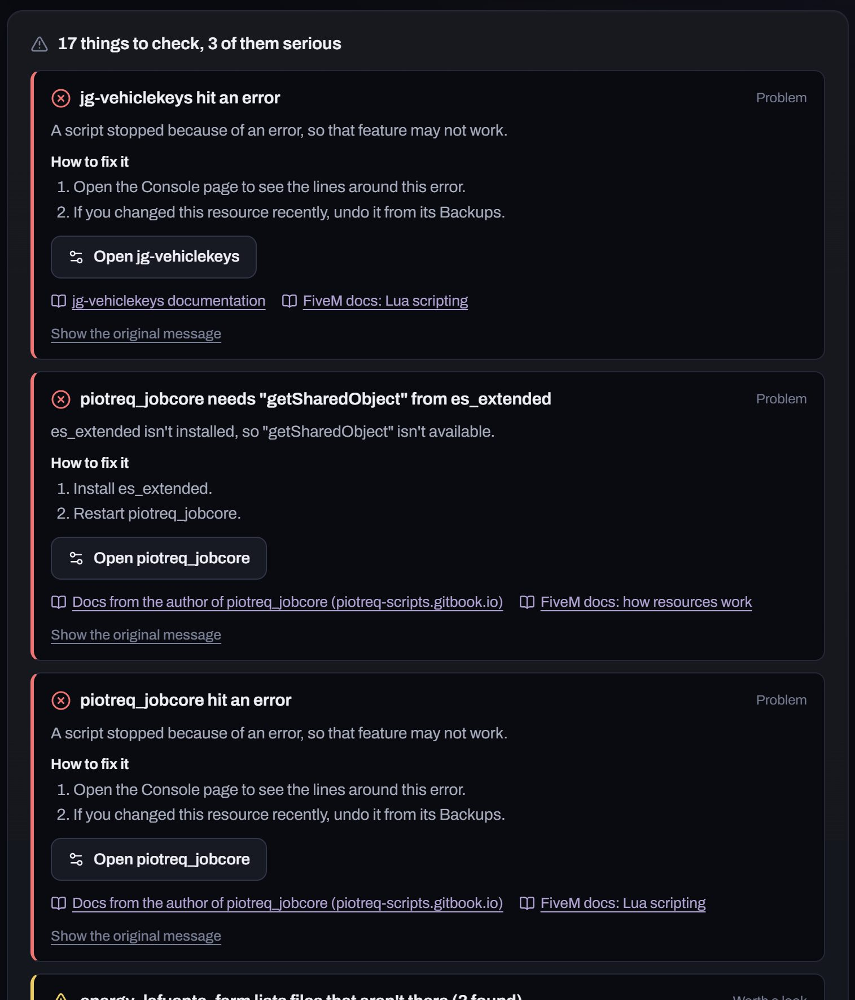
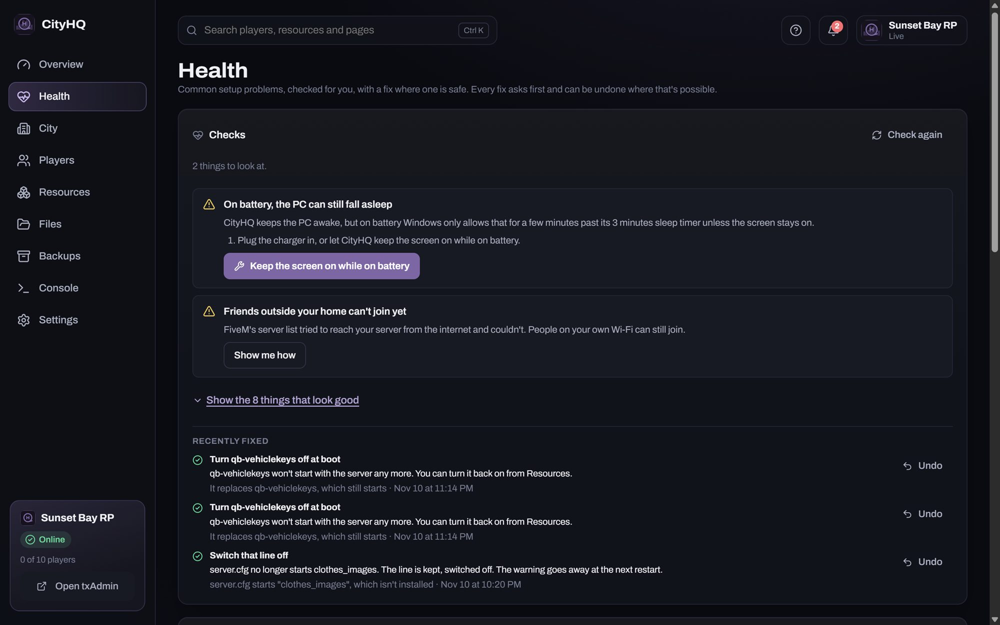
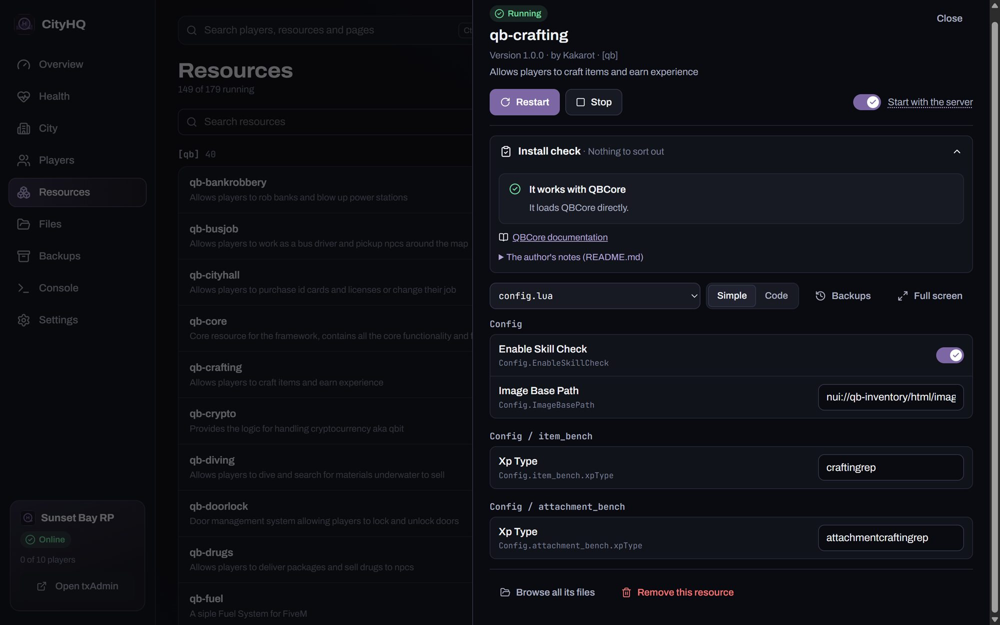
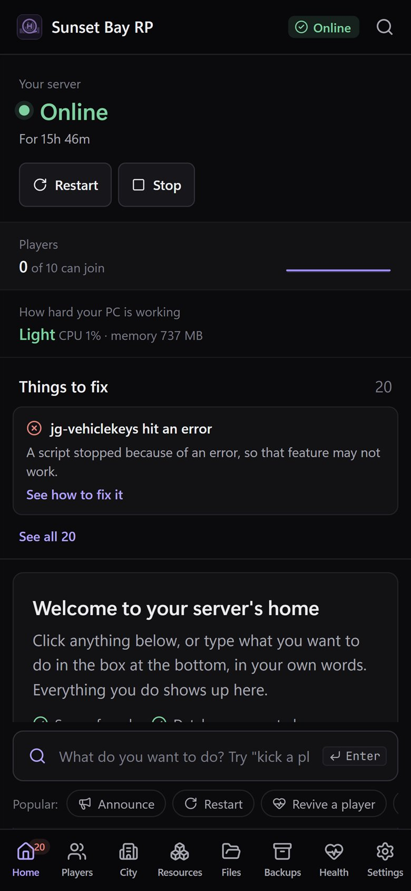

CityHQ runs your QBCore or Qbox server, and tells you what's wrong with it in plain words.
It's a free Windows app. It starts txAdmin, watches the console, fixes what it safely can and backs everything up. Every change it makes can be undone.

1 2 3 4- 1Restart warns everyone in game first, and saves them.
- 2Things CityHQ noticed. Each one says what it is and what to do.
- 3Who was on, over the last day or week.
- 4What your friends type in FiveM to join.
Fig. 1 The Overview. The city and names are made up.
What it does, in order
txAdmin still runs the game. CityHQ sits next to it and takes care of the rest.
-
Finds your server
Point it at the server you already have, and it reads txAdmin's settings, the ports and the database, including XAMPP's MySQL. No server yet? It downloads FiveM's server and a database into one folder and walks you through txAdmin.
-
Tells you what broke
Errors in the console become a short list, most serious first: which script, what happened, and the steps to fix it. A button opens that script's files, and there's a link to its own documentation.

1 2 3- 1The script, by name, and what went wrong.
- 2What to do about it, step by step.
- 3Opens the script's files in CityHQ.
Fig. 2 The problems list on the Overview.
-
Checks the setup
The usual reasons a new server keeps falling over: the PC going to sleep, missing database tables, scripts starting in the wrong order, and friends outside your home who can't join. It also explains every restart in the last day.
-
Fixes what's safe to fix
Where a fix is safe, there's a button. It says what it will do and asks first. Afterwards it's listed with an Undo button, and so is every other change CityHQ makes.

1 2- 1A fix button. It asks before it changes anything.
- 2Changed your mind? Undo.
Fig. 3 The Health page.
-
Looks after your scripts
Add one from a zip, a folder or a GitHub link. Before it goes live, an install check says whether it works with your framework, what it needs and which database tables it creates. Settings files open as simple forms, and every save keeps a copy of the file as it was.

1 2- 1The install check: does it fit your server, and what does it need?
- 2
config.luaas plain settings, no code.
Fig. 4 One script, opened from the Resources page.
-
Runs the city
Weather and time for everyone, a big announcement across every screen, revive everyone, clear empty cars, and a whitelist. For players: heal, teleport, items, money, jobs, kicks and bans, with no commands to type.
-
Backs everything up
A full backup every night, and a database backup before any SQL file runs. If the server crashes, CityHQ starts it again and tells you what it found. While the server runs, it keeps the PC from going to sleep.
-
Works from your phone

Turn on phone access and scan the QR code. The same dashboard works on any phone on your home Wi-Fi. It isn't reachable from the internet.
What it doesn't do (yet)
- ESX and other frameworks. It's made for QBCore and Qbox. ESX isn't supported yet.
- Everything for hosted servers. A server at a host like RocketNode connects through its panel's API key or SFTP, and nearly everything works, backups and installing scripts included. The install check, running .sql files and restart explanations are still for servers on your PC.
- Run on Linux or a Mac. CityHQ itself is a Windows app.
- Replace txAdmin. txAdmin still runs the game. If you close CityHQ, the server keeps going.
- Come signed. It isn't code-signed yet, so Windows warns you the first time you open it.
Install
- Download
CityHQ-windows.zip. Right-click it, choose Properties, tick Unblock, then choose Extract All. - Open the
CityHQfolder and double-click CityHQ. - It asks whether you already have a server. Yes: it finds it and lists anything missing. No: it builds one in a folder you pick.
After that, CityHQ updates itself. When there's a new version, it shows what changed and installs it when you press Update. Your server keeps running while it does.
Questions
- Is it free?
- Yes, including on servers that take donations. The code is on GitHub under the PolyForm Shield license: you can read it and change it, but not use it to make a competing product.
- Does it send my data anywhere?
- No. Everything stays on your PC. The only thing it contacts is GitHub, to check for a new version, and you can turn that off. License keys and passwords are hidden everywhere in the app.
- What does it change on my server?
- When you connect it, it adds its own settings file and a small helper script to your server folder. Anything else it changes goes on the "What changed" list, with an Undo button.
- Something's not working. Where do I say?
- Use Report a problem in Settings, or on the first screen. It writes the report, takes out keys, passwords, player IDs and IP addresses, and shows it to you before you post it on GitHub.
Free, for Windows 10 and 11.
Download CityHQ